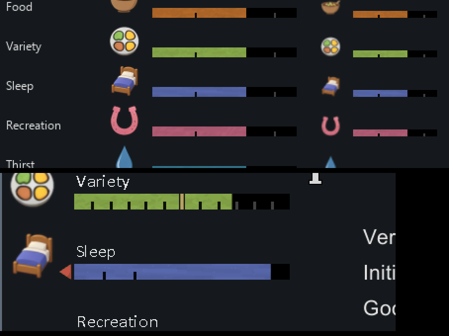
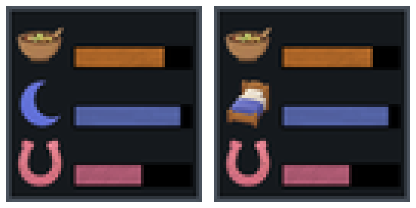
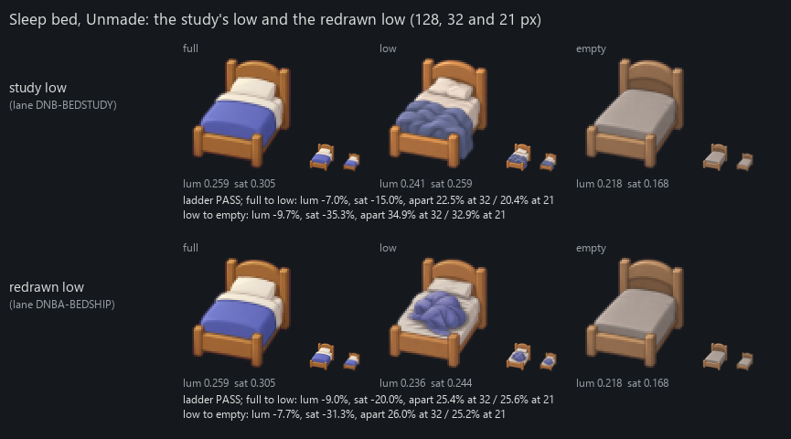

Sleep as a bed: both mods
2026-11-04. Not linked from any Workshop page. Earlier pages: art to review, redraws and the bed comparison.
1. Distinct Need Bars: Sleep's icon is now Bed A
Bed A as Sleep's full icon, composited onto real Needs-tab rows at a major and a minor row's size, between Food, Variety and Recreation. It passed all 695 of the mod's icon checks; only Sleep's rows changed.

The mod-list icon, before and after: the Sleep row is now the bed.

2. The add-on: the bed's low and empty
Top: the study's low. Bottom: the redrawn low, with the blanket balled up in the middle of the bed and the pillow flatter. Both empties are the bed stripped to a bare mattress. A fresh blind reader named the bed as Sleep and put full, low and empty in order at both sizes. Full against low is still the weakest pair: at 21 px the reader said that on its own it would guess the low bed was full. In the game Sleep also wiggles and glows once it drops below its last mark.
